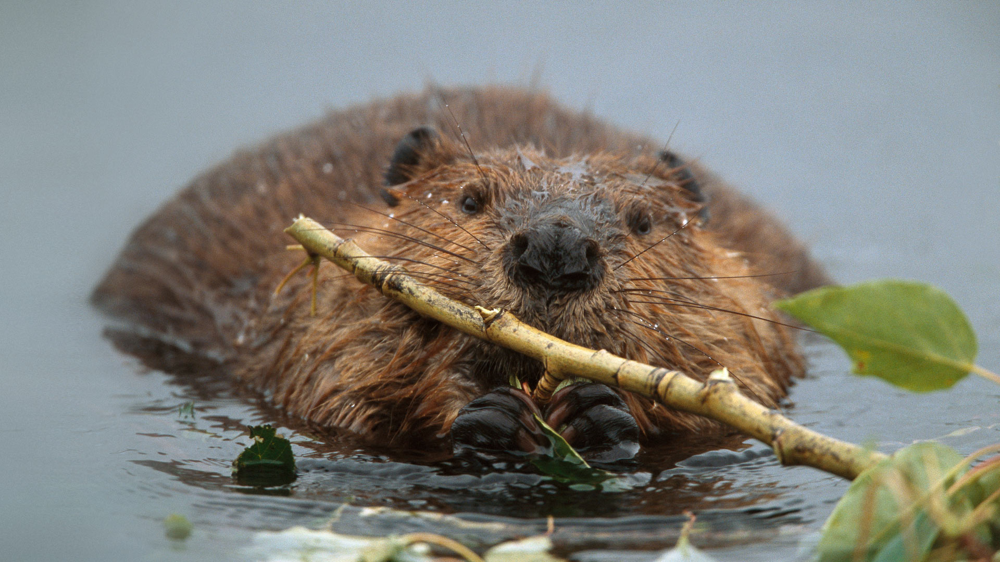

Beaver


Beavers are the largest rodents of Europe and North America. However, they are beaten by the capybara who are the largest rodents in the world. Beavers are a keystone species and are known as ecosystem engineers which dams they built create ecosystems for other creatures to thrive on. Beavers are mostly herbivores, often survivng off of bark, grass and other vegetations found in their habitat.